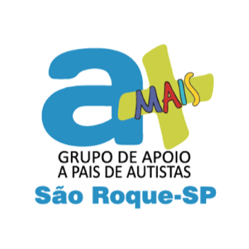
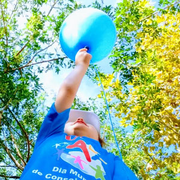

A aMAIS São Roque é uma associação de pais de pessoas com autismo e pessoas autistas, criada em maio de 2014.
O autismo é um transtorno de desenvolvimento que geralmente aparece nos três primeiros anos de vida e compromete as habilidades de comunicação e interação social.
O objetivo é levar informação a respeito do autismo a toda a sociedade e compartilhar experiências entre famílias e pessoas afetadas pelo Transtono do Espectro Autista.
A aMAIS realiza roda de conversas mensais, palestras de conscientização e anualmente a Caminhada no mês de abril em São Roque.
Autismo Ávila
O transtorno do espectro autista (TEA) se caracteriza pela dificuldade na comunicação social e comportamentos repetitivos. Embora todas as pessoas com TEA partilhem essas dificuldades, o seu estado irá afetá-las com intensidades diferentes. Assim, essas diferenças podem existir desde o nascimento e serem óbvias para todos; ou podem ser mais sutis e tornarem-se mais visíveis ao longo do desenvolvimento.
De acordo com o quadro clínico, os sintomas podem ser: ausência completa de qualquer contato interpessoal, incapacidade de aprender a falar, incidência de movimentos estereotipados e repetitivos, deficiência mental, portador voltado para si mesmo, não estabelece contato visual com as pessoas nem com o ambiente; consegue falar, mas não usa a fala como ferramenta de comunicação e tem comprometimento da compreensão.
O diagnóstico de autismo é feito por um médico, através da observação da criança e da realização de alguns testes de diagnóstico. O autismo pode ser, por vezes, quase que imperceptível e pode confundir-se com timidez, falta de atenção ou excentricidade, como ocorre em certos casos de autismo leve, por exemplo. O diagnóstico de autismo não é simples, e em caso de suspeita é importante ir ao médico para que seja ele a avaliar o desenvolvimento e o comportamento da criança, podendo indicar o que ela tem e como tratar.
O tratamento vai depender do tipo de autismo que a criança possui e do seu grau de comprometimento. Apesar do autismo não ter cura, o tratamento, quando é realizado corretamente, pode facilitar o cuidado com a criança, tornando a vida dos pais um pouco mais facilitada. Nos casos mais leves, a ingestão de medicamentos nem sempre é necessária e a criança pode levar uma vida bem próxima do normal, podendo estudar e trabalhar sem restrições.

Em São Roque com parceria da prefeitura alguns prédios públicos são iluminados de azul como a Brasital e o Portal da cidade.
Abrace esta causa. No proximo dia 2 de abril, vista-se de azul e promova o conhecimento. Acenda uma luz azul, não só em sua casa ou em seu estabelecimento, mas dentro do seu coração e daqueles que o cercam .
O Grupo aMAIS-São Roque realiza desde 2014 a Caminhada de Conscientização sobre o autismo no mês de abril, a iniciativa foi tomada com o objetivo de promover a discussão sobre o autismo e a importância da inclusão.
A WAAp (World Autism Awarenes) definiu que a cor azul seria a cor a representar o autismo, pois a síndrome afeta mais os meninos, na proporção de quatro meninos para uma menina, com isso distribuímos balões azuis e pedimos para pessoas irem vestida de azul.
Saímos da Avenida Bandeirantes até a Praça da Matriz e optamos por este percurso curto e sem musica, fogos ou som alto para que as crianças possam participar tranquilamente.
Local: Brasital - Avenida Araçaí, 250 - Centro, São Roque - SP
Horário: 9h30min as 11h30mim.
Contamos com sala de apoio para as crianças.
Realizamos uma vez ao mês a roda de conversa que tem como objetivo oferecer um espaço para troca de conhecimentos e experiências no tema do autismo, com a presença de pais, autistas e também com a colaboração de profissionais voluntários.
A troca de informação fornece suporte emocional e um senso de pertencer a uma rede social onde opera a comunicação e compreensão mútua amortecendo o estresse e aumentando os recursos para solucionar problemas.
RUA EPAMINONDAS DE OLIVEIRA, 239
CENTRO
São Roque-SP
contato@amaissaoroque.com.br
(11)97165-7461
(11)99752-5151


{kind=link}
{kind=link}
{kind=link}
{kind=link}
{kind=link}
{kind=link}
{kind=link}
{kind=link}